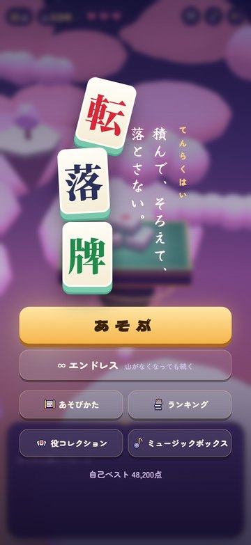
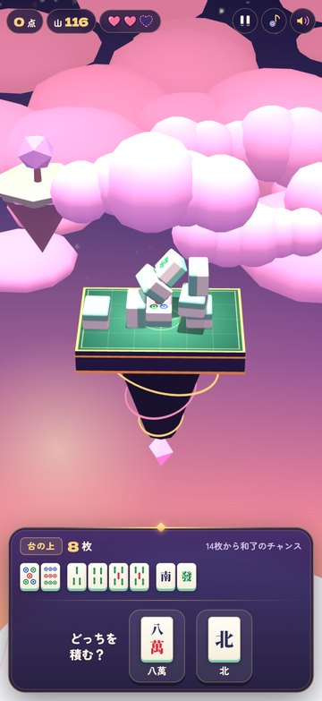
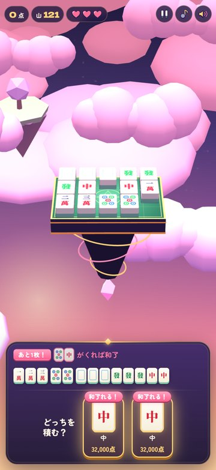
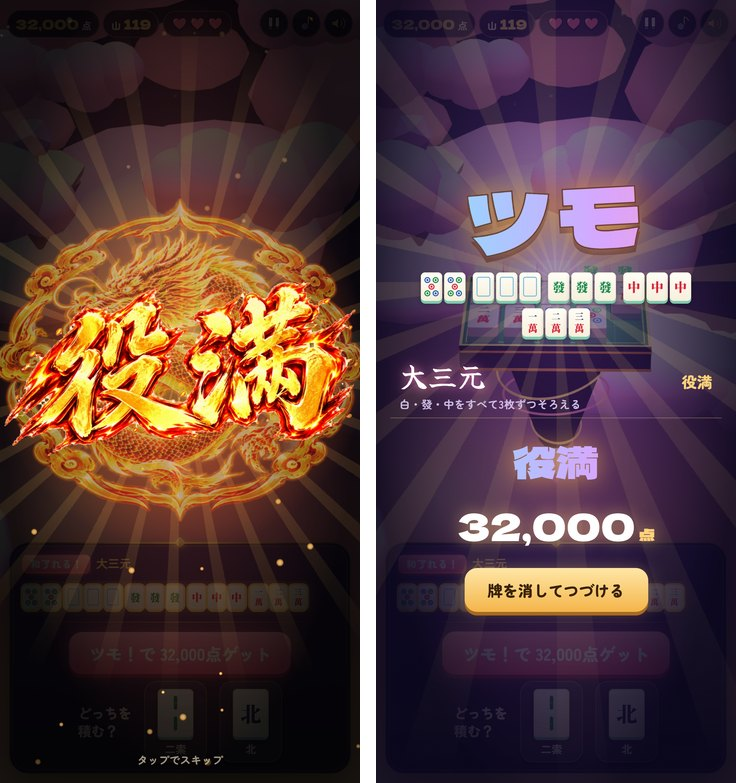
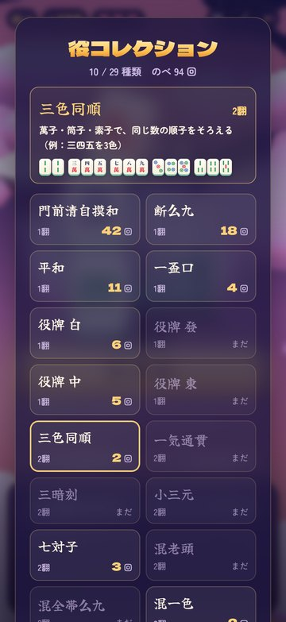

転落牌が App Store に出ました：積んで、そろえて、落とさない麻雀パズル
こんにちは、maosun です。
麻雀牌を積み上げて役をつくるゲーム「転落牌（てんらくはい）」が、10月14日に App Store に出ました！これまでブラウザ版だけでしたが、iPhone でも遊べるようになりました。無料です。
この記事では、どんなゲームなのか、ブラウザ版とアプリ版で何がちがうのかを紹介します。
App Store：https://apps.apple.com/jp/app/id6820129490
ブラウザ版：https://maosun-dev.com/tenrakuhai/


どんなゲーム？
画面の下に、牌が2枚出てきます。好きなほうを選んで、指でドラッグして落とす位置を決め、はなすと上から落ちます。牌はまわしたり、立てたり、寝かせたりもできます。
台の上の牌で役ができたら「ツモ！」。点数がもらえて、使った牌は消えます。
ただし、牌は本物のように転がって、ぶつかって、崩れます。台から落ちるとハートが減り、3つなくなるか、山の牌を使い切ったらおしまいです。ぐらぐらのタワーを支えながら、高い手を狙ってください！


麻雀を知らなくても大丈夫
「麻雀のルールがわからない…」という人でも遊べるように作りました。
- 和了まであと1枚になると、待っている牌を教えてくれます
- 役ができると知らせてくれて、和了ったときは役の意味をひとことで説明します
- はじめて遊ぶときは、牌の選び方から落とし方まで順番に案内します
積んでいるうちに、自然に役を覚えられると思います！


役満を狙おう
高い手ほど点数が高くなります。満貫、跳満、倍満…そして役満を和了ると、特別な演出が出ます。ぜひ一度、見てみてください！
点数が上がるにつれて、空の景色と BGM も移り変わっていきます。


やりこみ要素
- 役コレクション：作った役が集まっていきます。全29種類です。まだ作っていない役も、作り方と牌の例が見られます
- エンドレスモード：山を使い切って完走すると、山がなくならないエンドレスモードが遊べるようになります
- ミュージックボックス：36,000点をこえると、タイトル画面から好きな BGM を聴けるようになります


ブラウザ版とアプリ版のちがい
遊べる中身は同じです。ちがうのは次のところです。
- アプリ版：Game Center の世界ランキング（通常・エンドレス）で、全国のプレイヤーと点数を競えます。タイトル画面と結果画面に広告が出ます。ハートがなくなったときに動画広告を見ると、1ゲームに1回だけハートを回復して続けられます
- ブラウザ版：インストールせずに、すぐ遊べます。広告はありません。ランキングは、その端末の中の記録だけです
どちらも、役コレクションやその端末のランキングの記録は、使っている端末の中に保存されます。
BGM は僕の曲です
ゲームの BGM 3曲は、僕が Suno の有料版で作った曲です。点数によって曲が変わります。
- 0〜11,999点：Sakura Drift
- 12,000〜35,999点：星屑ランナー
- 36,000点〜：Beyond the clouds
この3曲は、Apple Music のシングル「転落牌」で聴けます。ゲームの外でも聴いてもらえるとうれしいです！
Apple Music：https://music.apple.com/jp/artist/maosun/6810909740
ぐらぐらのタワーと役満、ぜひ遊んでみてください！ご意見や不具合は、サポートのページ（https://maosun-dev.com/support.html ）から送ってもらえるとうれしいです。